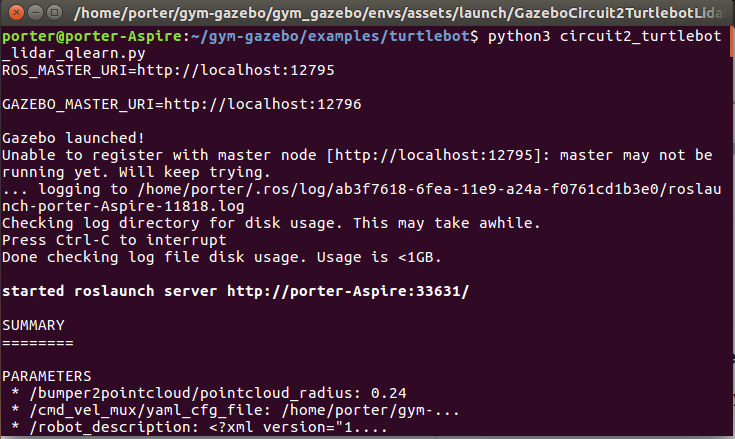
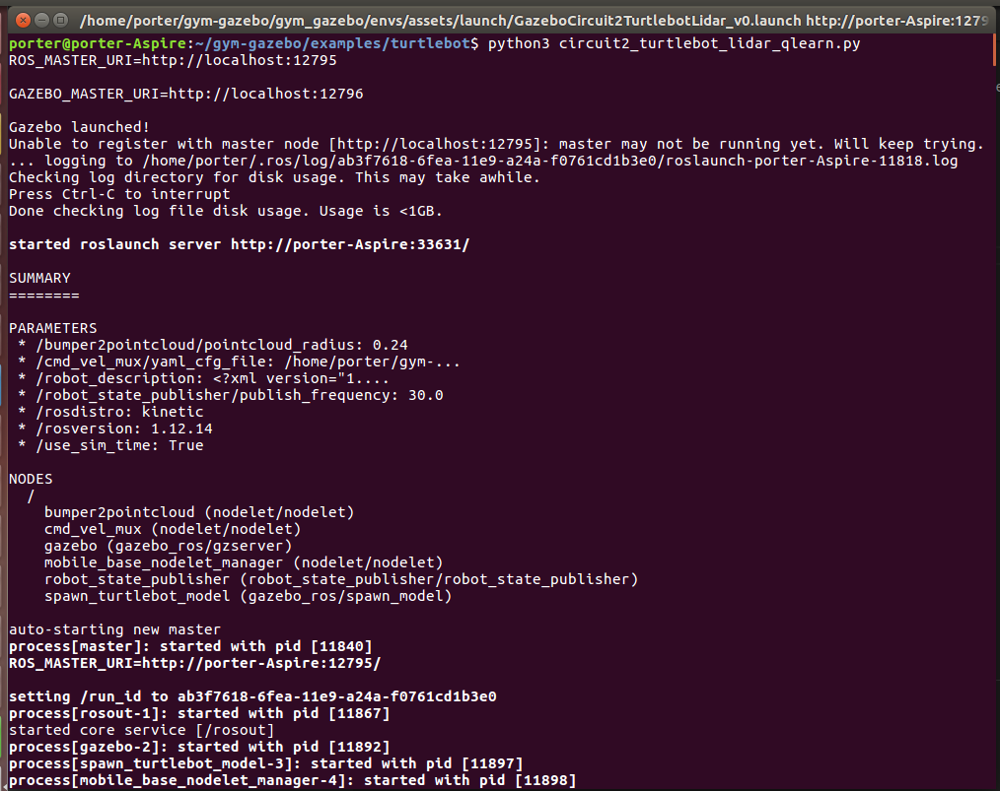
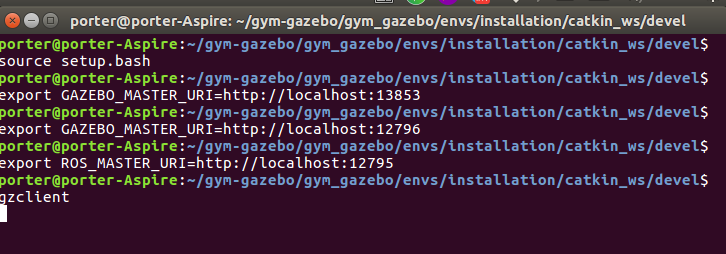

目录
本节会安装以下内容
- 目录
- 第一步：bash turtlebot_setup.bash
- 第二步：source setup_turtlebot.bash
- 第三步：eg export ROS_MASTER_URI=http://localhost:12795
- 第四步：gzclient
- 五 最终效果
- [x] Edit By Porter, 积水成渊,蛟龙生焉。
第一步：bash turtlebot_setup.bash
Running an environment
Load the environment variables corresponding to the robot you want to launch. E.g. to load the Turtlebot:
cd gym_gazebo/envs/installation
bash turtlebot_setup.bash
Note: all the setup scripts are available in gym_gazebo/envs/installation
Run any of the examples available in examples/. E.g.:
cd examples/turtlebot
python3 circuit2_turtlebot_lidar_qlearn.py

第二步：source setup_turtlebot.bash
- 我的source bash文件是setup.bash不是setup_turtlebot.bash，所以我的是source setup.bash
source
cd /home/porter/gym-gazebo/gym_gazebo/envs/installation/catkin_ws/devel
source setup.bash
进行expert操作
首先第一步：bash turtlebot_setup.bash过后，终端会有如下的提示
 得到有用的终端输出信息
porter@porter-Aspire:~/gym-gazebo/examples/turtlebot$ python3 circuit2_turtlebot_lidar_qlearn.py
ROS_MASTER_URI=http://localhost:12795
GAZEBO_MASTER_URI=http://localhost:12796
Gazebo launched!
Unable to register with master node [http://localhost:12795]: master may not be running yet. Will keep trying.
... logging to /home/porter/.ros/log/ab3f7618-6fea-11e9-a24a-f0761cd1b3e0/roslaunch-porter-Aspire-11818.log
Checking log directory for disk usage. This may take awhile.
Press Ctrl-C to interrupt
Done checking log file disk usage. Usage is <1GB.
started roslaunch server http://porter-Aspire:33631/
第三步：eg export ROS_MASTER_URI=http://localhost:12795
export ROS_MASTER_URI=http://localhost:12795 # 和上面的端口号一致
export GAZEBO_MASTER_URI=http://localhost:12796 # 和上面的端口号一致
第二步和第三步操作方法的截图

第四步：gzclient
执行如下命令打开gazebo
gzclient
五 最终效果

Display reward plot
Display a graph showing the current reward history by running the following script:
cd /home/porter/gym-gazebo/
cd examples/utilities
python3 display_plot.py
HINT: use --help flag for more options.
Killing background processes
Sometimes, after ending or killing the simulation gzserver and rosmaster stay on the background, make sure you end them before starting new tests.
We recommend creating an alias to kill those processes.
echo "alias killgazebogym='killall -9 rosout roslaunch rosmaster gzserver nodelet robot_state_publisher gzclient'" >> ~/.bashrc
参考来源：https://github.com/erlerobot/gym-gazebo/tree/master#installation